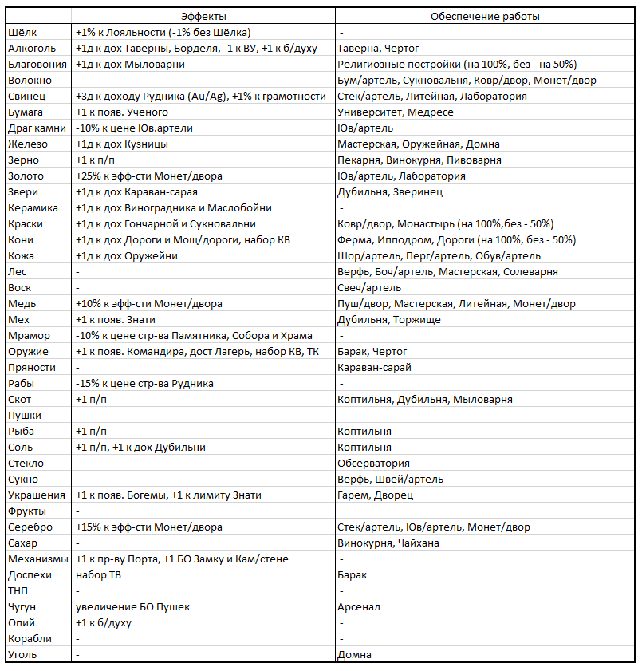

Торговля – это система экономических отношений между странами, при помощи которых можно продавать излишки производимых товаров и покупать дефицитные товары.
Торговля в игре идёт через прямые торговые маршруты между странами (далее – тм). Тм ограничены по количеству, доступному игрокам и имеют дальность (расстояние между столицами торгующих стран). Если дальность тм превышает максимальное расстояние, которое страны могут себе позволить как следствие развития торговых технологий, то страна несет дополнительные логистические издержки.
Тм даёт доход стране, продающей товар и вызывает расходы, у страны его покупающей.
Тм даёт 0,5 н/о целевой стране(эффект не складывается)
Отправить тм означает послать своих купцов в указанную в приказе страну для продажи тех товаров, которые ваша страна производит. Производимые товары в стране и покупаемые в ходе торговли, указываются в балансе страны в соответствующей таблице:
Знаком V отмечаются товары, производимые страной, знаком W – купленные в других странах.
Баланс содержит информацию с какими странами у вас проложены тм и какие страны направили тм к вам, а также расходы, полученные страной от торговли с этими странами.
Каждый товар в игре имеет свою специфику, предоставляя доступ к строительству Построек, или давая определенные бонусы стране.
Цены на товары статичны. Они не изменяются в зависимости от конъюнктуры:
Эффективность торговли влияет на затраты, которые несет страна при покупке товаров, ввозимых в страну чужими купцами. ЭТ зависит от изученных технологий, внедренных инноваций, наличия и величины торгового флота, наличия торговых построек в государстве и др. факторов.
Эмбарго – решение страны запретить вести определенным странам с ней торговлю. Число стран, против которых можно ввести эмбарго равно 8.